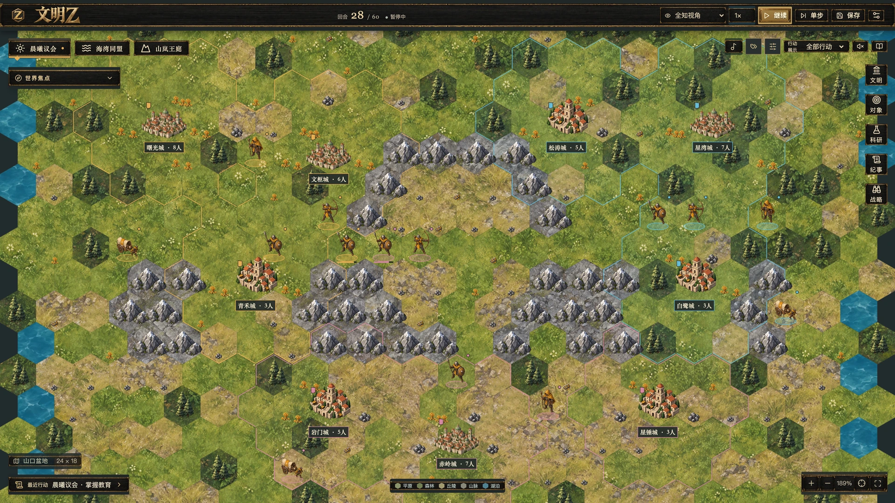
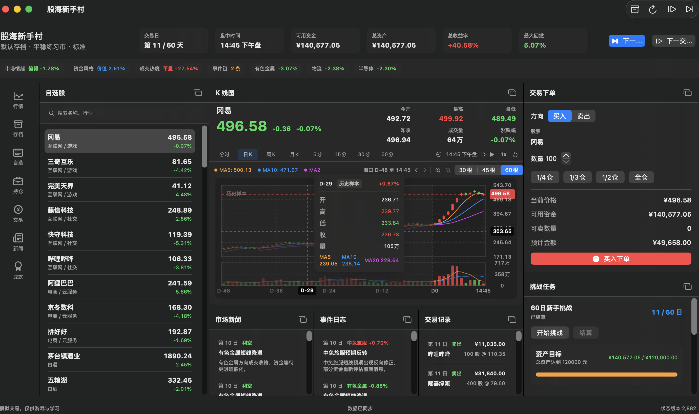
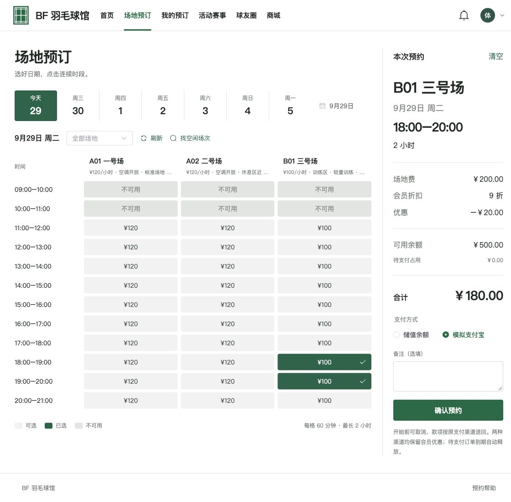
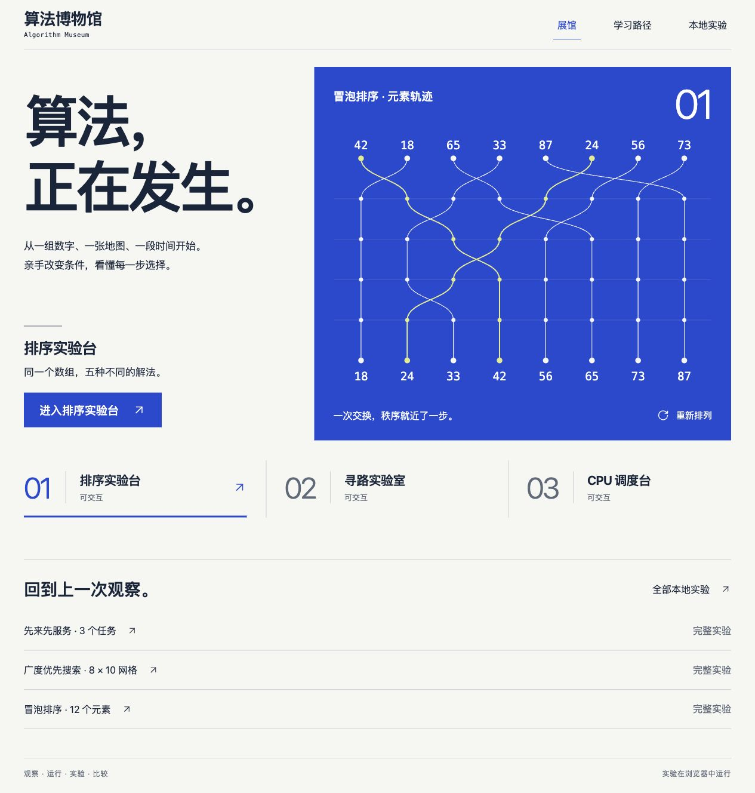
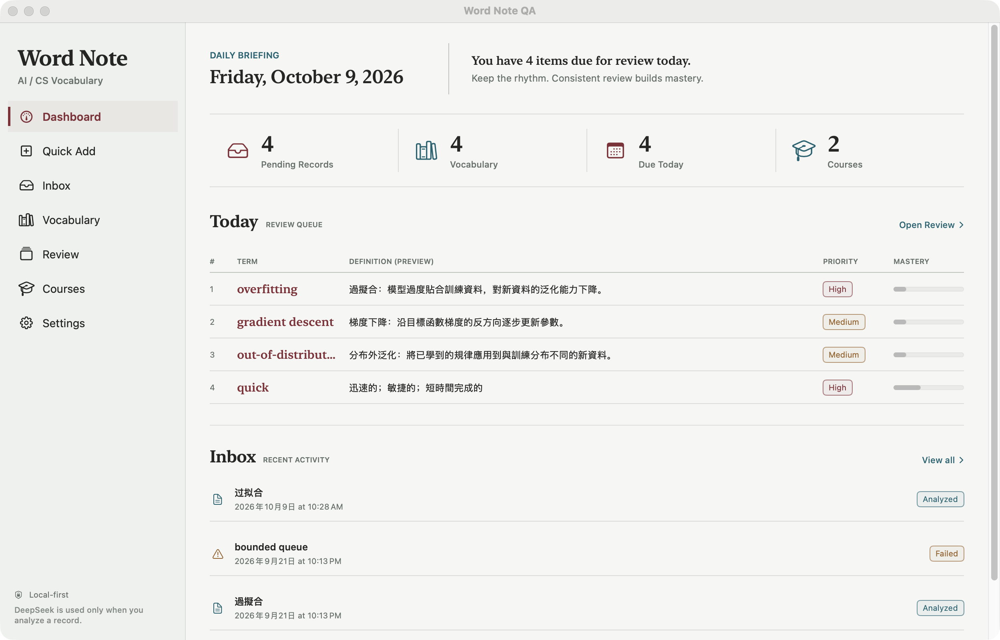

华南理工大学软件工程专业在读，专注于视觉模型开发与 AI 应用落地。从前端交互到后端服务， 从模型训练到边缘部署，享受跨越技术栈全链路创造价值的过程。 热衷于将前沿 AI 技术转化为可落地的产品方案。
从课堂到实战，持续进化中
从 AI 模型到全栈应用 —— 多领域技术能力
从目标检测、图像分割到语言与图像生成，结合模型训练、格式转换和边缘部署，探索 AI 应用落地。
选择技术领域，查看关联与项目
持续学习，持续精进

实机界面 · 演示局面
真实界面
真实界面
真实界面
原生界面 · 演示数据训练一个神经网络，就像人类学习的过程——从无知到感知，从犯错到成长。每一次反向传播，都是一次自我认知的迭代。
代码是最好的简历
来自合作伙伴和同学的真实评价
无论是项目合作还是技术交流，随时欢迎联系
仅在主动开启后播放，站内翻页续播